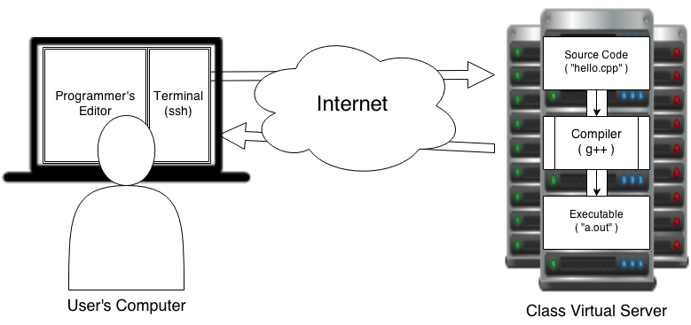

Structured Programming Basics
📚 Gaddis (Ch. 1, 2)
First Principles
- computer - a programmable machine designed to follow instructions
- Computers are able to perform mathematical and logical operations at great speed.
- algorithm - a precise, step-by-step plan for solving a problem
- program - a set of instructions expressed in a programming language that a computer follows to perform a task
- programmer - a person who writes a computer program
- programming language - any language designed specifically for use in creating computer programs
A computer is simply a re-configurable mechanical tool.
Programmers use programs to direct the behavior of the machine.
So, a computer is the ultimate “Swiss Army Knife”.
Computer Code
Computers execute code that is stored in computer memory in a binary form.
11000111 01000100 00100100 00000100 00011000 10000111 00000100Humans are not skilled at writing in machine language.
Language Levels
- Low-Level
- Machine Language
- Pure binary, but usually expressed as hexadecimal
- Assembly Language
- Corresponds more or less 1:1 with machine language (easy conversion)
- More human-readable (for some definition of more)
- Machine Language
- High-Level
- C, C++, Python, Swift, etc.
- Designed to look like a human language
- Must be translated to machine language
- C, C++, Python, Swift, etc.
When this fragment is shown, the first line of code will have the focus class added to it and it gets highlighted.
Another fragment. This time, both lines will now have the focus class.
And now both 1 and 3.
A Complete C++ Program:
Now, we will take a look at the parts of the program, and see what each part does.
A Complete C++ Program:
- This line is called a preprocessor directive.
- It communicates with a phase of the C++ compiler called the preprocessor, telling it to include code from a file named “iostream”, which is a C++ library.
- The iostream library contains code that is used for input and output activities.
- This line is called a function header.
- It begins the definition of a function called “main”.
- Every C++ program must contain a
main()function.- The
main()function tells the computer where to begin executing. - Instructions will be executed one at a time, starting with the first line of
main.
- The
- The curly braces enclose a block of code in C++.
- block - a set of related C++ statements that perform an action
- Every opening curly brace must match with a closing brace.
- We indent the code between the
{and the}.
- We indent the code between the
- This statement sends the words “Hello, World” to the screen.
std::coutis the name of the standard output stream- A stream is a one-way flow of data from the point of view of the program.
<<is the stream insertion operator, used to place things into a stream."Hello, World!\n"is a string literal; a string is just a collection of characters that are treated as a single unit.- String literals are always surrounded by double-quotes.
- literal: A literal is a value that is typed directly into the source code, in a representation that the programming language recognizes as a value of a recognized type. Literal values must be formatted according to the syntax rules of the language.
- This line terminates the program by causing the
main()function to return the value0to the operating system.- No code following this line would ever be executed; this means that the
return 0;line will always be the last line inmain().
- No code following this line would ever be executed; this means that the
- The operating system considers zero to be an indication that the program exited “normally”.
- Other values are possible, and we will use them later.
Escape Characters
We often want to include control characters in our string literals, but we don’t have the ability to type these in directly. C++ allows the use of escape characters for this purpose.
- escape character - any character combination beginning with “
\”, used to represent a character that cannot otherwise be represented in a string literal.
Examples:
Code Meaning
-----------------
\n newline (think of the <ENTER> key)
\t tab character
\" allows a double-quote in a string literal
\\ allows a backslash in a string literal
\r carriage-return (used in Windows line endings: "\r\n")Terms from Program Parts
- preprocessor : compiler component that works on the source code itself. Directives start with
#symbol. - library or header : a file containing C++ code that adds functionality to your program.
- statement : a single logical step expressed in C++ (usually one line) Ends with a semicolon!
- stream : a one-way flow of data in a program
- literal : a data value that is hard-coded in a program
- string : a collection of characters treated as a single data value
- block : a collection of related statements surrounded by curly braces
Our Development Toolchain
- User’s Side: Editing, running and testing.
- Server Side: Stores files, provides compiler and other tools.
Some Linux / UNIX terminal basics
https://towardsdatascience.com/basics-of-bash-for-beginners-92e53a4c117a
https://www.educative.io/blog/bash-shell-command-cheat-sheet
https://wiki.cs.astate.edu/index.php/Common_Linux_Commands (Requires VPN access.)
Practice Developing and Compiling
Make modifications to the program so that it will print out your name, favorite food, and favorite TV series.

Structured Programming Basics

CS 50x2 Accelerated Programming Series